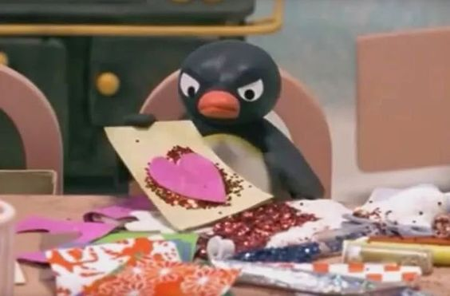

En algún lugar leí una vez que los pingüinos buscan la piedrita más bonita que encuentran y se la dan a su pareja, también que los búhos le dan regalos a la pareja que quieren cortejar, y así más datos sobre animales que construyen refugios o realizan danzas para “su alguien” especial.
Bueno, es obvio que no soy un animal de estos pero sí provocaste en mí querer regalarte algo con bastante cariño porque me caes bien y quiero darte un pequeño detalle. Te mereces todas las flores del mundo, pero yo solo te puedo dar estas, presiona el botón que dice "Abrir" por favor.
Abrir Hubieron momentos en los que me sentí identificada con este pingüinito jajaja.